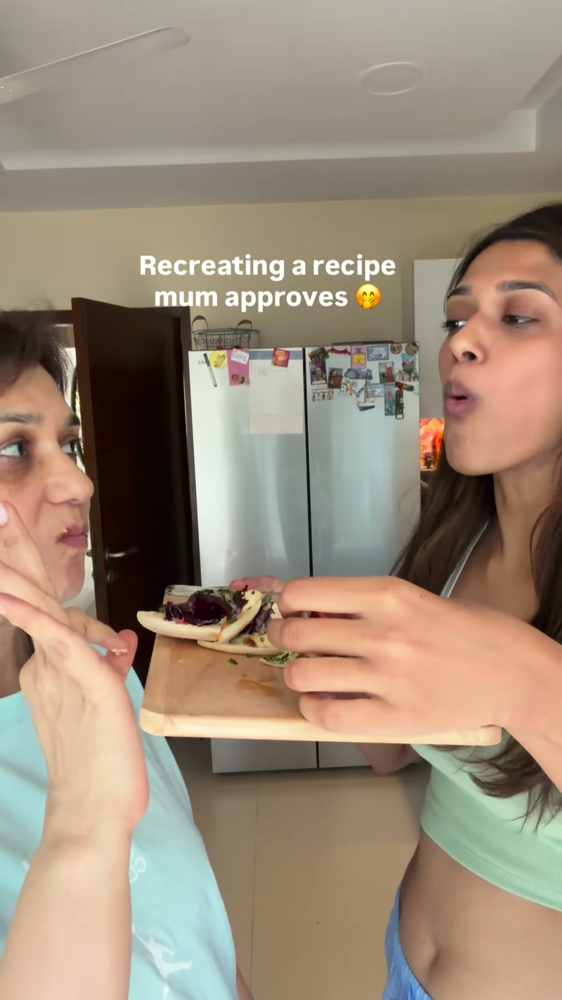
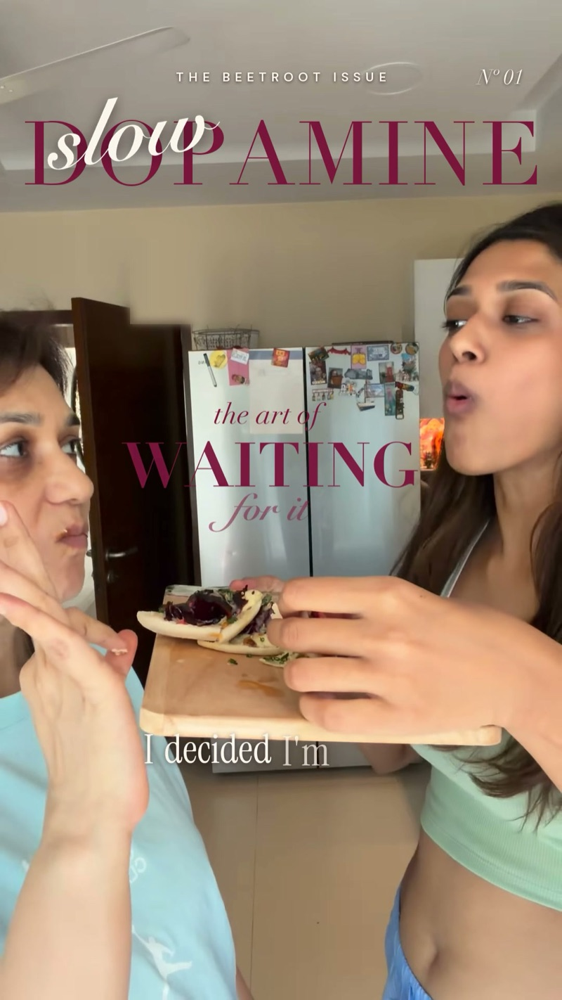
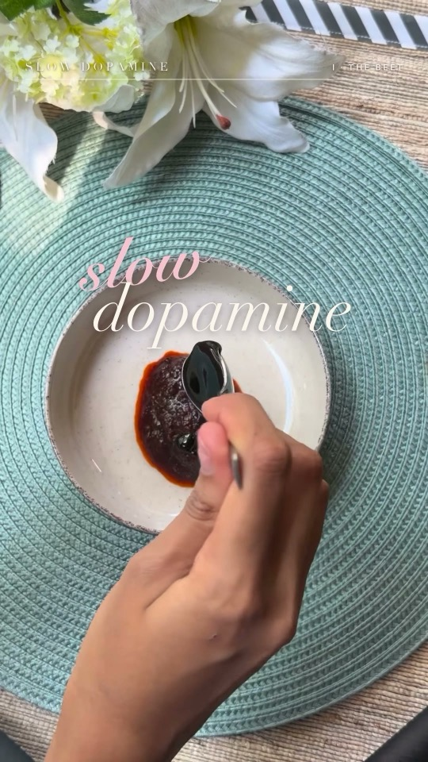
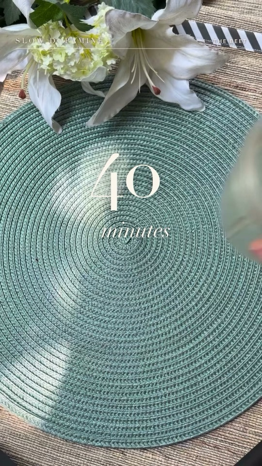
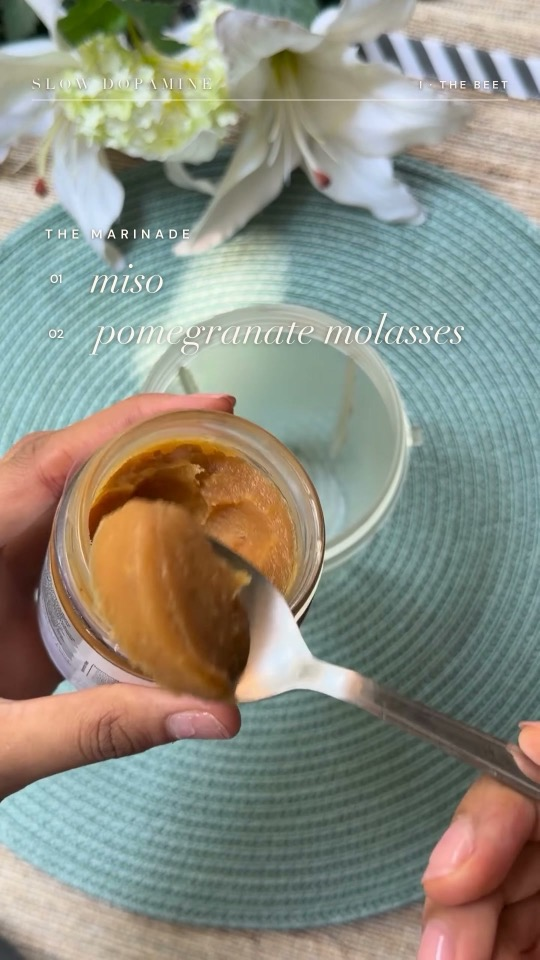
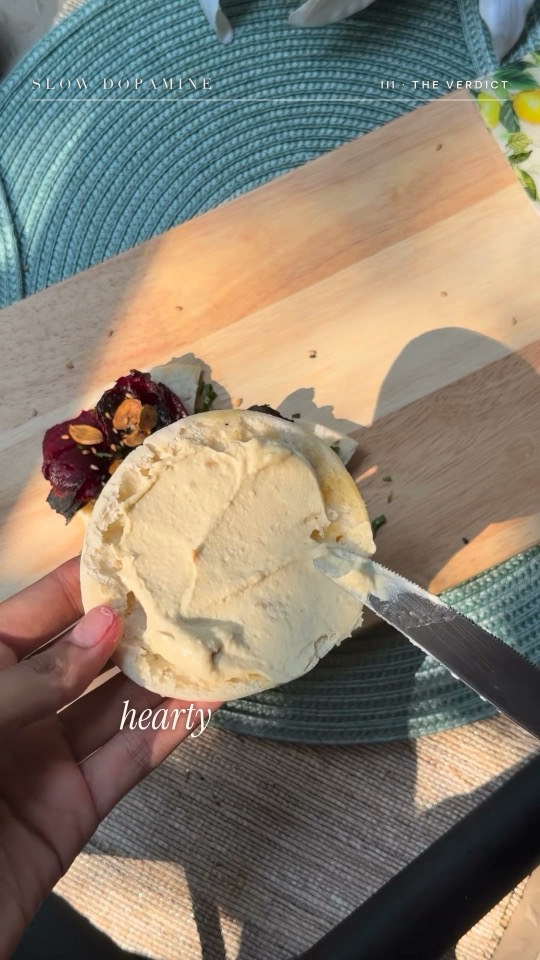

This is not a magazine cover. It is a recipe reel.
How a food creator went from 4 hours and no animations to a high-end reel in 10 minutes, ready to go live.
Book your reel →Same footage. Same voice. A different league.


Every word is hers. Only the level changed.
Sanya Parekh had the story, the voice and 8.7K followers. What she did not have was four spare hours for every reel.
One reel took about 4 hours, and it still went out with no animations. Her profile showed 7 posts in October, after a three-week gap in September. Her recipe reel about chasing slow dopamine was ready for a bigger stage.
Now she sends her clips and gets back a high-end reel in about 10 minutes, ready to go live. Every word stays exactly as she recorded it.




What she got
- Slow Dopamine: her recipe reel as a magazine cover, with word-by-word captions, a few quick transitions and a closing title card.
- Reintroduce: a word-by-word title on a trending audio, a font flicker on her name and a list of who she is.
- Instagram audit: one page with one main topic, three bio options, six named Reel series, a 30-day plan and a schedule of 3 to 4 Reels a week.
Your story is ready. Is your edit?
This is for you if
- Editing eats your week. You have the ideas, and the edit is what slows you down.
- Your story is strong and the edit looks basic. You want high end, and you still want to sound like you.
- You miss posting days. A reel that comes back ready to go live keeps the schedule moving.
How it works
- Send your clips. Raw footage and a reference you love, nothing more to prepare.
- Get your high-end reel. Your voice stays as recorded, with a look built around your own footage.
- Go live. It comes back ready to post, with no editing left on your side.
Your next reel could be the cover.
Send your clips and a reference you love. You get back a high-end reel in your own voice, ready to go live.
Book 30 minutes with Tamanna →